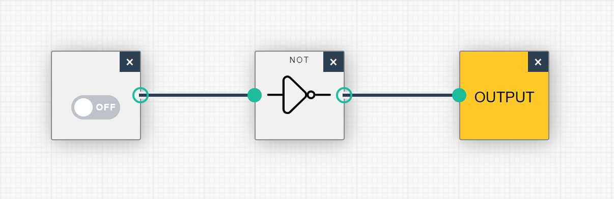
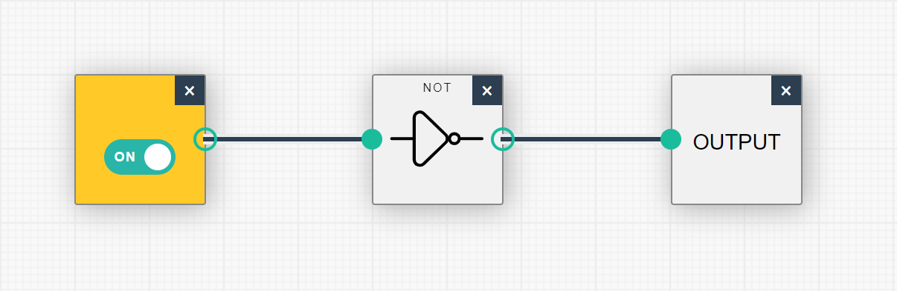

Other Projects
Project 1: NOT Gate
Project 2a: AND Gate
Project 2b: AND Gate - Easy
Project 3: Binary to Hexidecimal Converter
Project 4a: ASCII Converter
Project 4b: UNICODE Converter
Project 5: Machine Language Instructions Converter
Back
Project 1: NOT Gate
The not gate reverses the input signal it is given.
 